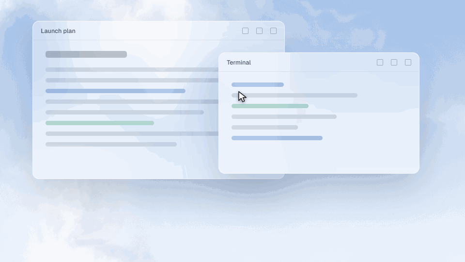

Your taskbar, as a home bar.
A thin pill that rises to meet your cursor and opens into a dock.
Nothing on screen, then a pill, then a dock.

- Search on the Windows key.Apps, settings, files and power commands.
- Wi-Fi, Bluetooth and sound in reach.Without opening Settings.
- Notifications that leave on their own.And Do not disturb is one switch.
Try it in a minute.
Run the installer, then move to the bottom edge. Quit whenever you like and your taskbar comes back exactly as it was.